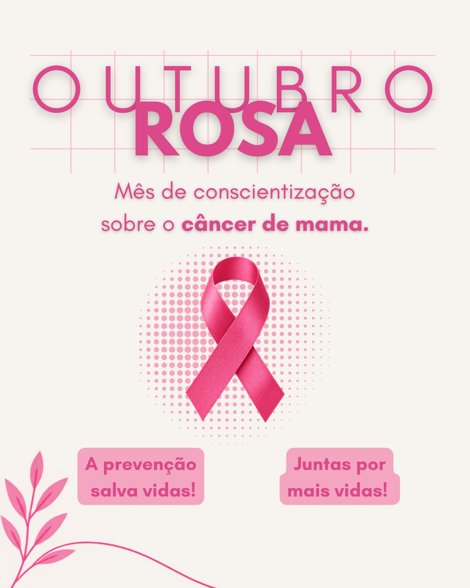

Campanha Outubro Rosa
Prevenção e conscientização
Informação, cuidado e apoio para a comunidade.
O Outubro Rosa é um movimento de conscientização sobre o câncer de mama. A campanha reforça a importância da prevenção, da atenção aos sinais do corpo e da detecção precoce, além de ampliar o acesso à informação e aos serviços de saúde.
O movimento começou no início dos anos 1990 e passou a ser realizado anualmente em vários países. No Brasil, a campanha também ganhou reconhecimento legal em 2018.
O objetivo é compartilhar informações sobre o câncer de mama, incentivar o cuidado com a saúde e aproximar as pessoas dos serviços de prevenção e diagnóstico.
Encontrar alterações suspeitas e buscar avaliação de saúde rapidamente pode reduzir o estágio em que a doença é identificada e melhorar as possibilidades de tratamento.
O câncer de mama também pode ocorrer em homens. A campanha pode, portanto, falar de saúde e prevenção de forma ampla, sem limitar a comunicação a um único público.
Nem toda alteração significa câncer, mas mudanças persistentes ou suspeitas devem ser avaliadas por um profissional de saúde.
Um nódulo na mama ou na região da axila pode ser um sinal que merece avaliação.
Vermelhidão, retração ou mudanças na aparência da pele podem exigir investigação.
Alterações no formato do mamilo ou secreções devem ser comunicadas a um profissional.
Conhecer o próprio corpo ajuda a perceber alterações que não eram comuns anteriormente.
Segundo o INCA e o Ministério da Saúde, prevenção primária e detecção precoce são estratégias importantes para o controle do câncer de mama.
Praticar atividade física, manter uma alimentação adequada, evitar o tabagismo e reduzir o consumo de bebidas alcoólicas são medidas associadas à redução do risco de vários cânceres.
Observar e perceber o próprio corpo ajuda a identificar mudanças. O autoexame, porém, não substitui avaliação profissional nem os exames indicados para cada pessoa.
Para mulheres sem sinais ou sintomas, o Ministério da Saúde recomenda mamografia de rastreamento dos 50 aos 69 anos, a cada dois anos. Pessoas com sinais suspeitos devem procurar avaliação de saúde.
Na programação da Rede, o Outubro Rosa também é uma oportunidade de reunir a comunidade, divulgar o trabalho da instituição e fortalecer a arrecadação por meio de eventos.
03/10 · Jardim · programação de manhã e tarde/noite. A Festa do Arroz também foi citada com previsão para 11/10.
“Informação também é uma forma de cuidado.”
Conteúdo de saúde desta página foi complementado com informações do Ministério da Saúde e do Instituto Nacional de Câncer (INCA). Para orientações individuais, procure um serviço de saúde.
INCA — prevenção e detecção precoce no Outubro Rosa
Ministério da Saúde — câncer de mama